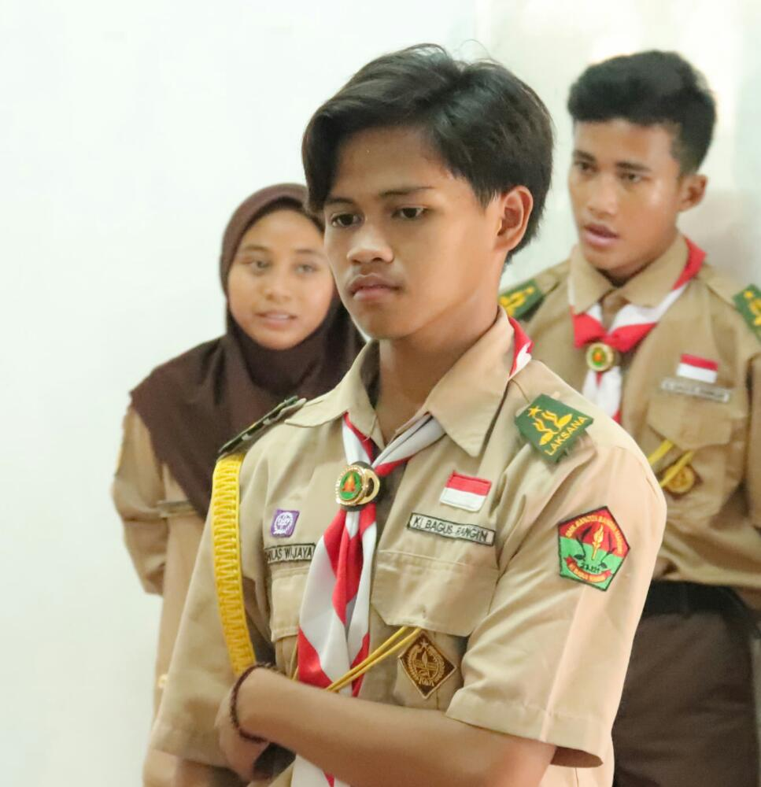
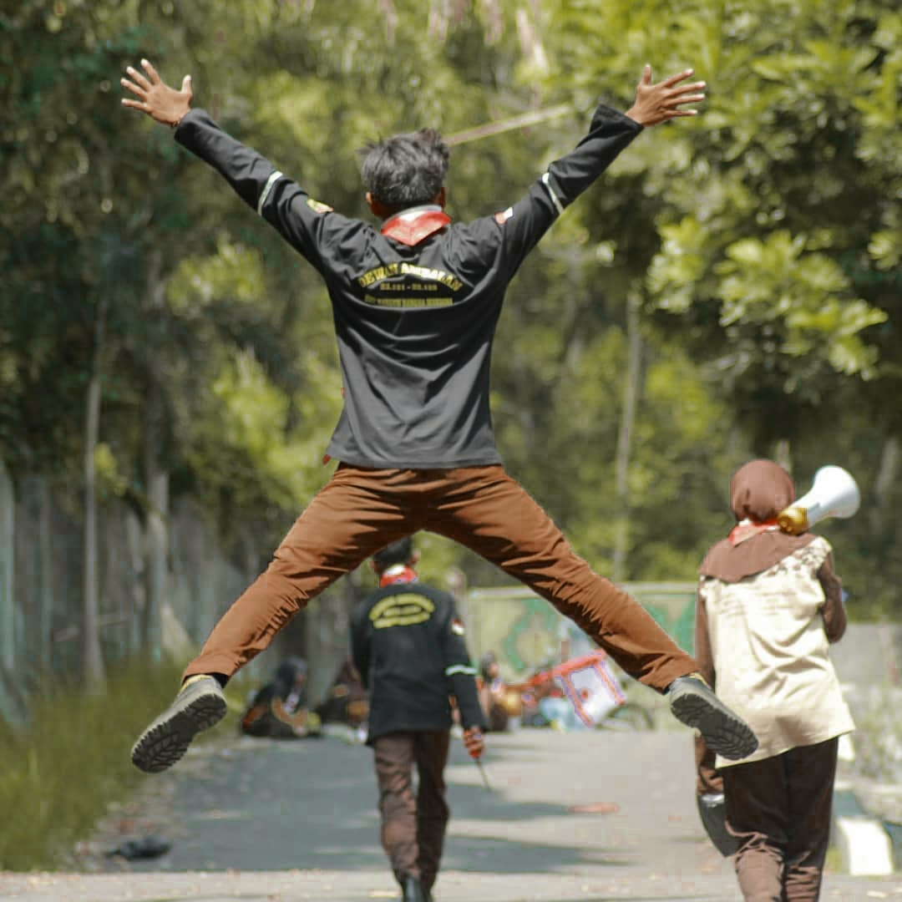
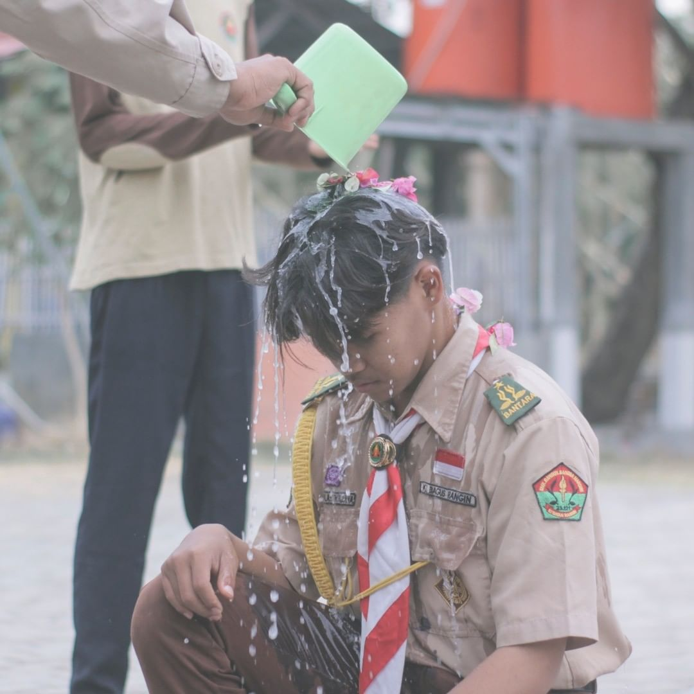
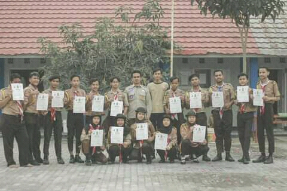
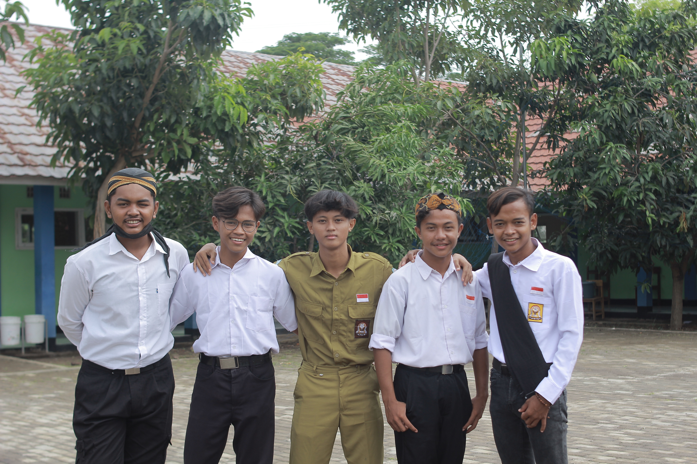

I'm a student in SMK Bangun Bangsa Mandiri Indramayu.
Perkenalkan Nama Saya Nicholas Wijaya, biasa dipanggil Niko. Saya berusia 16 Tahun, dan sekarang saya masih kelas XI (sebelas) di SMK Bangun Bangsa Mandiri Indramayu dengan Jurusan TKJ (Teknik Komputer dan Jaringan).
Saya tertarik pada pemrograman awalnya karena liat konten di Instagram, terus saya coba praktekkan ternyata keren juga. Jadi aku sampai sekarang masih sangat suka ngoding. Kadang sampe telat makan saking Asik nya ngoding. dan Web Portfolio ini juga dibuat hanya 1 (satu) malam, jadi maaf jika ada kekurangan.

Foto pada sa'at pelantikan Penegak untuk adik kelas, Sidomba-Kuningan.

Foto pada sa'at dilantik menjadi Penegak Bantara, SMK BBM Indramayu.

Foto bersama dengan Anggota Dewan, Pembinda dan Pendamping Pembina, SMK BBM Indramayu.

Foto bersama anak-anak OSIS sekaligus dari asal sekolah dan desa yang sama, yaitu MTs HIMA Temiyang. SMK BBM Indramayu.
Sayang sekali Foto pada sa'at dilantik menjadi Penegak Laksana saya tidak menyimpannya :(